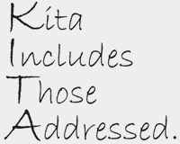

Nonton video
Reproduced with the permission of Project Pop and Musica Studios.
Watch the full video clip from Project Pop. Use the viewing worksheet to break the song down and help you to understand it.
To help you make more sense of the song, read the review at www.myindo.com/story/198.asp.
Kita/Kami
There are two words for ‘we’ (or ‘us’) in Indonesian: kita and kami. If you are talking to someone and you use kita, you are including them. So the question Project Pop ask, ‘Apa yang dapat menyatukan kita?’, is asking ‘What can unite us (all you listeners and us)?’ If you said to a friend, ‘Shall we go and get a drink?’, you would use kita.
Kami, on the other hand, means ‘we’ (or ‘us’) but does not include the person who is being spoken to. If Project Pop had asked ‘Apa yang dapat menyatukan kami?’ the meaning would be quite different: ‘What can unite our band?’. If you told a friend what your family did on the weekend, you would use kami (unless your friend came too).
An acronym that helps you remember is:
If English (or another language that only has one word for ‘we’) is your first language, this is quite a difficult language point to master yourself. For now, just be aware that it exists, and that you will see and hear both kami and kita used.